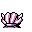

#090
Shellder
Water
Its hard shell repels any kind of attack. It is vulnerable only when its shell is open
Base stats Total 290
HP60
Attack45
Defense70
Speed50
Special65
Details
- Species
- Bivalve
- Height
- 1'00"
- Weight
- 9.0 lb
- Catch rate
- 190
- Base exp
- 97
- Growth
- Slow
Level-up moves
LevelMoveType
StartTackleNormal
StartWithdrawWater
Lv 9LeerNormal
Lv 12Water GunWater
Lv 15Ice ShardIce
Lv 19SupersonicNormal
Lv 22BubblebeamWater
Lv 24Aurora BeamIce
Lv 26ClampWater
Lv 28Spike CannonIce
Lv 39Ice BeamIce
Lv 45Hydro PumpWater
Evolution
Where to find
Any fishable waterOld RodLv 5
TM / HM
TM06 ToxicTM09 Take DownTM10 Double-EdgeTM11 BubblebeamTM12 Water GunTM13 Ice BeamTM14 BlizzardTM30 TeleportTM31 MimicTM32 Double TeamTM33 ReflectTM34 BideTM36 SelfdestructTM39 SwiftTM44 RestTM47 ExplosionTM49 Tri AttackTM50 SubstituteHM03 Surf